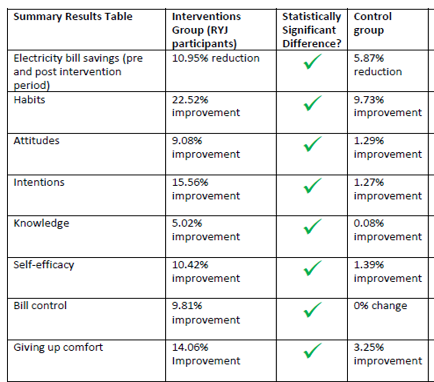

Tools Used
- Building Motivation Over Time
- Feedback
- Financial Incentives and Disincentives
- Norm Appeals
- Obtaining a Commitment
- Overcoming Specific Barriers
- Prompts
- Mass Media
- Word of mouth
Initiated By
- CitySmart
- Queensland University of Technology
Partners
- Australian Government
- Energex
- The Good Guys
- Queensland Council of Social Services
- BCM Group
Results
- 12.3% reduction in annualized household energy consumption
- 22.5% increase in energy habits adopted
Case study PDF
Landmark Case Study
Reduce Your Juice: Meaningful Gamification Motivates and Empowers a Challenging Consumer Segment to Save Money and Energy
This innovative social marketing approach changed the energy use behaviours of low-income renters in Brisbane, Australia, through meaningful gamification. The gamified experience promoted desired behaviours and reduced undesired ones, all carefully chosen using McKenzie-Mohr's cbsm guidelines for selecting behaviors. The Reduce Your Juice program was designed to be fun, easy and impactful. On the exterior, it appears as a simple, fun and easy experience of games and gamified activities, communications, community, and rewards. However, below the surface lies a sophisticated intervention developed through the application of formative research and theory and implemented by a team of multi-disciplinary experts from the energy, social marketing, behaviour change, digital insights & technology, research, and social sectors. Designated a Landmark case study by our Building Energy peer review panel in 2022.
Background
The Reduce Your Juice (RYJ) pilot program received funding from Australia’s Federal Department of Industry and Science as part of its Low-Income Energy Efficiency Program, that trialed different approaches in various locations to produce findings that could be used to inform future policies and programs to assist low-income households to become more energy efficient.
Traditional energy reduction programs were high cost but low impact for this priority audience, who were sceptical of government programs and authority. Service models were high touch, involving home visits making them expensive and complex to run for government, utilities and social service providers. Traditional learning approaches relied on heavy information provision to educate people to change their behaviour with limited success.
RYJ sought to test and demonstrate the use of a digital approach to energy efficiency engagement combined with the provision of energy efficiency rewards to create real energy consumption behaviour change amongst a cohort who are traditionally difficult to reach and engage and least likely to take any action at all. Once proven, this approach could be rolled out to a larger audience at relatively low cost, for example there are 1.7m low-income households in Australia, with 63.2% of this population renting or occupying public housing. (ABS)
Behaviour Selection
A methodology adapted from Community-Based Social Marketing (CBSM) was used to ensure the intervention would be targeted towards the best areas for change for the priority audience. This involved analysing many potential behaviours and scoring them based on predicted impact (cost saving), ease of change (including barriers and benefits), and penetration within the target group. The complexity and nature of performing each behaviour were also considered (e.g. simple, short term, complex, repetitive, long term, or habitual).
Behaviours were shortlisted based on their scores, with priority given to the cost benefit and ease or likelihood of performing the behaviour. Following this process, behaviours were logically grouped into three clusters which formed the primary focus for the program, as follows.
Switch
- Switch off lights
- Switch off appliances to avoid standby
- Switch off the second fridge/freezer
Cool
- Use a fan rather than the air conditioner
- Set your air conditioner to 24 degrees in summer
- Close curtains and blinds to keep the temperature down
- Close windows and doors if using the air conditioner
Wash
- Use a clothesline or drying rack, rather than the dryer
- Wash full loads of washing
- Wash in cold water
- Take shorter showers (hot water use – target 4 minutes)
Getting Informed
Research revealed demographic and psychographic profiles of these young low-income renters that were pivotal in designing the intervention.
Inter-Generational Poverty
Some of the target group had experienced generations of low income in their families, often being born into their situation. This could normalise aspects of stress and crisis (such as addiction, family, finances, relationships, or violence) in their lives and could mean a lack of positive role models that could help break the cycle. This could also affect their ability to prioritise the importance of energy reduction in their daily lives, as it may have been considered a ‘non-essential’ issue.
The income status and occupational types of the target group meant they were often ‘underemployed’ in that despite their need for full-time wages, they only had part-time or casual work. There were high rates of unemployment within the target group, with large portions of stay-at-home parents performing home duties and raising families rather than being in full-time employment. With a lack of full-time employment and discretionary income, the target group often spent a lot of time at home. This placed more emphasis on having household entertainment including televisions and gaming consoles as well as a connection to the internet. While the target group earned the lowest levels of income in the population, they did not see themselves as ‘low income’. Generally, they tended to overestimate their income position within the spread of income levels, perceiving themselves as middle class even though they sat in the lowest income deciles.
Generation Y Renters
Most of the target group were part of Generation Y, known for ‘living in the now’, with a high level of instant gratification featuring in their daily lives. This also translated to an ability to change or try new things.
They often lived in short-term rental housing and had a transient lifestyle. These rental households on low, fixed, and unreliable incomes were particularly impacted by rising energy costs due to:
- Poor-quality housing
- A higher proportion of income spent on this essential service
- A lack of discretionary funds and limited ability to reduce energy use by upgrading existing appliances and fixtures
Inefficient Appliances, Many Gaming Consoles, Laptops and Air Conditioners
The target households generally had essential appliances such as refrigerators, washing machines and electric ovens. The level of more discretionary entertainment devices such as televisions, laptops and gaming consoles was not limited by their low income; the number of gaming consoles and laptop computers was much higher than the Brisbane average. The high overall number of devices created a high energy dependency. Target households had high levels of communication devices, especially smartphones, tablets and computers provide access to a range of services, entertainment and resources through the internet.
Along with the high number of appliances, the age of major household appliances also impacted energy consumption, with the older appliances using significantly more power. Many in the target group had appliances aged over 10 years old, especially refrigerators (20%) and standalone freezers (25%). The high cost of replacing these appliances created a real and perceived barrier.
Two thirds of target households had air conditioners, only just below the Brisbane average. Many households had two or more of these, and many of the conditioners were over 10 years old.
High Energy Bills, Perceived as Beyond Their Control
Despite having the lowest levels of income in the population, these households had 40% higher energy bills than an average (median) Southeast Queensland Household.
The factors discussed above led to a perceived lack of control and stability, which in turn caused lower levels of intrinsic motivation to change behaviour and take action to lower energy use. In addition, this overall lack of control led to a lack of trust for authority and a level of skepticism, which meant the target group didn’t like being told what to do by positions of authority.
Their younger age demographic was generally not motivated by traditional values such as the thriftiness of the baby boomers. While they didn’t like to waste energy, the fact that their bills were higher than average implied a certain amount of waste in their consumption. This may have been a symptom of their lack of knowledge around energy efficiency or the intangibility of electricity, which rendered the issue largely invisible. With a relatively modern standard of living at their fingertips, there was often little thought given to conserving energy resources. This was observed through behaviours such as leaving appliances on when not in the room and running a half empty dishwasher or washing machine. The impact of other people within multiple-person households was an additional factor that could push household energy consumption beyond their perceived control.
There appeared to be limited awareness within the target group around the ‘average’ costs for household electricity and whether their bill was high or not. It was not always apparent to them that using more electricity would end up costing them more. They didn’t necessarily draw a connection between the number of appliances or the age and energy efficiency of their appliances in relation to the size of their energy bills.
While they were generally aware of some of the appliances that used the most energy, they vastly underestimated the impact of high consumption appliances such as air conditioners, electric hot water, laundry appliances (dryers), and swimming pools on their energy bills.
Large increases in energy prices led to an increased perception that energy costs were not within their realm of control and as such energy bills were difficult to change. There was sentiment that energy costs were inflicted on consumers, who were at the mercy of large energy organizations trying to make more money. However, the issue of increasing energy prices added more urgency and impetus for change as the target group felt the increasing impact of these costs on their standard of living.
While the target group self-reported high interest in reducing their energy consumption, their low engagement with energy efficient behaviours saw the program focus on initiatives that involved limited effort or financial commitment such as turning off the lights. This may have been rationalized by the fact energy consumption had no direct personal impact on users and the implications of energy consumption were not directly seen or experienced by users until the quarterly electricity bills were received. While there was interest in reducing energy, and agreement that they could do more to save electricity, they were not confident in their ability to reduce their energy consumption.
Barriers
Five barriers to energy efficiency amongst this group were identified using a systematic literature review, secondary and primary formative research.
- Low interest/Low involvement topic
- Information failure
- Capital constraint barriers to reduce their energy consumption
- Low self-efficacy
- Price concern.
The nature of energy consumption itself was problematic in that the target group couldn’t visually see energy being consumed or didn’t interact with it until they received their quarterly bills, thus going into crisis mode which typically achieved very little change. For example, the target group vastly underestimated the impact of high consumption appliances such as air conditioners, electric hot water, and laundry appliances on their energy bills.
Benefits
The benefits for this audience were identified by primary data collection.
- Lower energy bills, which meant more money to spend on other necessities such as food
- Sense of pride in achieving mastery and control over seemingly uncontrollable household bills
- Socially responsible behaviour that protects the environment through reduced consumption
Prioritizing Audiences
RYJ was designed for low-income households. Pilot participants had to:
- Be 18–35 years old
- Have a low income (<$41,500 individual or $50,700 household income; CRN or Job Seeker ID was used to validate income)
- Rent and pay electricity bills
- Live in the Brisbane, Moreton Bay, Logan or Redlands local government areas
- Be the only one in the household participating in the program.
According to the Australian Bureau of Statistics, there were approximately 95,000 people that met this criterion in the Brisbane, Moreton Bay and Redlands local government areas (4% of the population of this region.) This pilot program was designed for 1,000 participants (1% of the larger target audience in the region.)
Delivering the Program
In stark contrast to traditional energy efficiency approaches, this program was delivered in a non-conventional manner using digital games, entertainment and social media to engage participants in an apparently simple yet highly relevant experience that made the achievement of cost-saving benefits easy and rewarding for participants. (Vivid, Personalized, Credible, Empowering Communications)
A program brand - Reduce Your Juice - was developed that used fun characters called the Watt family (including a dog called Killer Watt). The brand was developed to resonate with consumers and engage with them emotionally.
The Watt Family

Images used with permission from CitySmart, Brisbane City Council’s Sustainability Agency
Acknowledging the nature of energy efficiency as invisible, intangible and undervalued amongst low-income households, RYJ sought to make the invisible visible, the intangible tangible, and the unvalued valuable. Cohorts of participants progressed through a targeted, carefully designed experiential journey delivered via a multi-channel digital platform that incorporated a mobile app, email, SMS, rewards and a social media community. (Building Motivation, Engagement and Habits Over Time; Incentives, Mass Media; Norm Appeals; Overcoming Specific Barriers; Word of Mouth)
The program was designed to progress participants through a journey in small achievable portions. This fractured approach was designed to fit seamlessly into participant’s lifestyle. Much like levels in a game, the program was designed to progress participants through stages using communications, incentives, feedback, reminders and rewards. Each major step was rewarded with both tangible and intangible rewards to provide feedback and a sense of accomplishment for participants as part of their overall journey. (Feedback; Prompts)
By completing smaller, easier tasks first and increasingly working towards more challenging actions, participants progressively built their self-efficacy and developed a sense of control as they progressed through the program. Messages aimed to improve participants’ self-efficacy so they could build their knowledge and feel more confident and empowered in their actions, thus improving the likelihood of longer-term change. See image below for the customer journey and the elements of the program.
Customer Journey

Elements of the Program

Images used with permission from CitySmart, Brisbane City Council’s Sustainability Agency
Three digital games were developed (one for each of the three energy efficiency behaviours being targeted). In each game there were incentives, calls to action and gaming elements.
RYJ harnessed the power of gamified learning, which was a new learning frontier. It focused on simple actions that everyone could take and weren’t dependent on whether the customer was a homeowner or renter, where a customer lived, or what they earned. Customers could engage any time and place via their smartphone and their activity could be measured through individual tracking via the app.
The game badges played a major role in this strategy. Successfully unlocking a game badge was inherently rewarding. It also provided more chances to win tangible rewards (each badge served as one entry in the draw to win a prize). The badge element extended beyond the app games to emails and community discussion. This was more cost effective from a program perspective and helped build participant confidence and motivation. (Incentives)
Incentives and rewards were used throughout the program to promote interest, motivate action, and shape behaviour by reinforcing positive outcomes. The rewards system was designed to provide participants with tangible benefits for completing program actions, and to inspire further action.
To pique interest and drive involvement in the program, rewards products were used during recruitment as incentives for participants to take action and register. Providing an extrinsic motivator in combination with elements of fun and entertainment gave participants a reason to participate in a program that might otherwise have been considered of low interest.
Tangible products were also used to reward participants for completing stages of the program. Rewards aligned with each game/ cluster of energy efficiency behaviours to further reinforce change. For example, by completing the stage focused on washing and drying behaviours, participants unlocked a “Fully Loaded” pack containing drying racks, pegs and basket to help them implement their learning and behaviours.
Rewards were designed to progressively reinforce participants’ achievements over time to build a sense of achievement to motivate progression through the program towards the final goal. Earning rewards helped participants improve their self-efficacy in relation to associated behaviours and feel empowered in their actions.
To create an element of surprise, the minor rewards packs were not communicated in advance so that when packs were received participants were delighted and rewarded for their efforts, to inspire further action and progression. Rewards products were accompanied by print materials which included a related “Powerhack” to further reinforce learning. Once installed and used, the rewards products served as in-situ prompts to remind participants of their achievement, learning and positive behaviours. (Prompts)
One of the larger rewards involved earning new energy efficient white goods (refrigerators or washing machines) in exchange for surrendering their energy intensive appliances. The installed appliances were expected to deliver an additional (‘set-and-forget’) energy saving over and above the behavioural change savings.
While extrinsic motivators were used throughout the program, the core focus remained on creating an intrinsically motivating experience for participants to ensure they found their own internal reasons to take action and maintain the behaviour. Using the principles of gamification for these elements helped make the program experience fun and motivating for participants.
A reward fulfilment process was developed to administer and manage the rewards component of the program. The customer support resource used the CRM to manage reward fulfilment with external suppliers. With sizable final rewards on offer, the fulfilment of these major rewards was outsourced to The Good Guys, who provided expertise in this area as one of Australia’s largest suppliers of whitegoods. The Good Guys managed participants directly regarding their final rewards, ensuring expert advice was given in the administering of the like-for-like exchange of whitegoods for successful participants. Managing this process externally allowed RYJ resources to focus on core elements of the program and ensures a positive experience for participants.
Addressing Key Barriers
|
Barrier |
How it was addressed |
|
Low interest/Low involvement topic |
4 Acknowledging the nature of energy efficiency as invisible, intangible and undervalued amongst low-income households, RYJ sought to make the invisible visible, the intangible tangible and unvalued valuable. 4 Participants progressed through a targeted, carefully designed experiential journey delivered via a multi-channel digital platform that enabled households to come together and play together. 4 The behavioural learning approach for RYJ was a combination of instrumental and experiential learning done in a discrete way (stealthy learning) whereby participants did and experienced (virtual world of game), reflected and analysed, conceptualised and then applied and experimented (real world). |
|
Low self-efficacy |
4 Each major step was rewarded with both tangible and intangible rewards to provide feedback and a sense of accomplishment. 4 Program elements were designed to provide participants with continual feedback and recognition of their achievements. This continuous, incremental progress built intrinsic motivation and made change seem achievable for participants. 4 By completing smaller, easier tasks first and increasingly working towards more challenging actions, participants progressively built their self-efficacy and developed a sense of control as they progressed through the program. 4 Messages were designed to improve participants’ self-efficacy |
|
Information failure |
4 Underlying the program was a custom behaviour change model which abandoned traditional single element interventions such as once-off in-home consultations or informational flyers. 4 RYJ was delivered in over 300 bite-sized digital interactions across multiple channels, allowing participants to digest small portions of information through a continuous approach to learning which easily melded into their digital lifestyle. |
|
Price concerns / capital constraint barriers to reduce their energy consumption |
4 Program participants earned a new energy efficient white good (fridge and washing machine) in exchange for surrendering their old energy intensive appliance by interacting with the program and adopting the energy efficient behaviours. 4 Energy efficient products installed were expected to deliver an additional (‘set-and-forget’) energy savings over and above the behavioural change savings. |
Financing the Program
The following table shows the program’s budget.
|
Expenditure |
Actual Cost (AUS$) |
|
Project Management & Staffing Costs |
$2,122,133 |
|
Products and Rewards |
$709,874 |
|
Support Materials |
$256,058 |
|
Online Engagement |
$64,377 |
|
Customer Engagement |
$60,929 |
|
Digital Interfaces |
$288,089 |
|
Distribution and Installation |
$36,067 |
|
IT Platform |
$935,230 |
|
Community Engagement |
$190,150 |
|
Professional Services |
$118,502 |
|
Behavioural Research |
$175,222 |
|
Project Evaluation |
$354,668 |
|
Customer Support |
$93,061 |
|
Project Office |
$168,981 |
|
TOTAL |
$5,480,281 |
Cost-effectiveness was calculated at four levels, as described in the following table.
|
Cost Level and Outcome Description |
RYJ Cost Inputs /Assumptions |
|
Direct Intervention Level (Level 1) The delivery of an outcome for the cost of delivering the intervention to a participant |
Allocation of the follow costs as described in Budget Section on page 201 of the RYJ Final Report: 4 Products and Rewards 4 Distribution and Installation 4 Support Materials |
|
Trial Component Level (Level 2) The delivery of an outcome for the cost of delivering the intervention to a participant, and costs associated with recruiting a participant and maintaining a participant. |
Items described in Direct trial approach (Level 1), and the follow costs items: 4 Online engagement 4 Customer Engagement 4 Community Engagement 4 Project Management & Staffing Costs (1/3 Costs) |
|
Total Business Level (Level 3) The delivery of an outcome for the cost of delivering the intervention to a participant, direct costs associated with recruiting a participant, and maintaining a participant, cost of running an organisation to do the above |
Items described in Trial Component (Level 2), and the follow costs items: 4 Digital Interfaces 4 IT Platform 4 Project Office 4 Project Management & Staffing Costs (1/3 Costs) |
|
Total Trial Level (Level 4) The delivery of an outcome for the cost of delivering the intervention to a participant, direct costs associated with recruiting a participant, and maintaining a participant, cost of running an organisation to do the above and cost of participating in a government funded trial |
Items described in Total Business (Level 3), and the follow costs items: 4 Professional Services 4 Behavioural Research 4 Project Evaluation 4 Project Management & Staffing Costs (1/3 Costs) |
Cost-Benefit Analysis


On a relatively small-scale basis of delivery to 1,000 participants, each dollar invested by the Federal Government yielded a dollar of benefit due largely to the high set-up cost. The economic viability of a digital approach significantly improves at scale, for example delivery to 10,000 and 100,000 participants would deliver between $2.02 and $2.70 in benefits for each dollar invested, thus providing a strong economic case for future investment.
Measuring Achievements
Control Group
A field experiment was conducted that compared the 1,000 household participants in the program with a control group of non-participants. The control group (n = 734 households) shared the same demographic characteristics as the participant group. Data were collected before and after the program for both groups over the same time period.
Energy Use
Both the participant and control groups were asked to self-report their electricity bill size prior to and after the program intervention.
While surveys were used to overtly collect data from participants, analytics were built into all aspects of the program to collect data in a non-intrusive manner designed to preserve the customer experience whilst gaining important information about the participant engagement with the intervention. These data sources were used to help overcome the effects of social desirability bias often encountered in the self-reported measurement of behaviour change.
The use of a control group in the field experiment method provided a valid way of comparing results with a demographically comparable group of people who did not receive the program intervention at the same points in time. This allows for inferences of causality from the intervention.
Each participant was allocated a unique participant number that allowed their self-reported data to be linked to the game analytics, billing data and consumption data. The collection of billing and energy data through participants’ energy meters was incorporated into the program to strengthen the self-reported behaviour change and bill savings measures. Permission was required to obtain this data from a participant’s meter via their National Meter Identifier (NMI). Through a relationship with the energy network supplier, the collection of this data was made somewhat less intrusive for participants as permission was built into the program’s terms and conditions and data were sourced by matching participants’ addresses with their NMI outside of the program experience.
Household electricity consumption data was sourced directly from Energex (the energy distributor in Southeast Queensland). Data were supplied for participants’ home addresses for the 12 months prior to the intervention as well as for the following 12 months after the intervention. The project team compared self-reported electricity bill data with actual consumption data (kWh). The analysis showed a high level of correlation, which provides confidence in the accuracy of the electricity bill amount provided by participants.
Habits
The habit questions on the surveys measured nine behaviours. Participant responses were in Yes or No format, and changes were measured as the percentage of Yes answers relative to baseline.
Feedback
Program elements were designed to provide participants with continual feedback and recognition of their achievements. This continuous, incremental progress built intrinsic motivation and made change seem achievable for participants.
Results
Energy Savings
An annualized total of 470,583 kWh were saved compared with the previous year. The actual figure was likely to be higher as approximately 10% of participants had moved house, changed providers, timing issues in meter readings and the data was not available.
- 12.3% reduction in annualized household energy consumption compared with the previous year (average savings of 783 kWh per household per year).
- 10.95% reduction in household electricity bills (average saving of $219.28 per household per year.)
Behaviour
- 22.5% increase in energy habits adopted
- 1001 registered to participate, only 770 registered participants started the program, 601 participants competed the program • 78% of starters completed the program • 60% of registered participants completed the six-week program
- 97.2% recommended RYJ to friends and family
- Participants played the games five times (500%) as much as was required to receive the rewards
- More than half (601) of participating households completed the program with an energy efficient appliance. The number of rewards distributed was:
o Fridges – 246
o BBQs – 207
o Washing machines – 148
Attitude Change
- Significant improvement in attitudes, bill control, self-efficacy. Knowledge
Knowledge
- Overall knowledge in both the participant and control groups was quite high, however the participant group showed significant improvement in 7 out of 10 questions after completing the intervention while the control group showed no significant change in knowledge for any of the questions over the same time.
The reason knowledge improvement was low was because the baseline knowledge was already high - people knew about energy efficiency behaviours. This high knowledge but low behaviour profile of the target audience was the reason why a behavioural learning approach (do - feel - learn) rather than a standard learning approach (learn - feel - do) was selected as the underpinning theoretical approach to program design.
Other Co-benefits
- Provided 51 jobs for long term unemployed youth, Queenslanders with disability and low risk female prisoners.
- Reconditioned or recycled old white goods collected from participants. (19.2t of scrap metal collected)
- Recycled all product packaging including Styrofoam to minimise impact on the environment. (900kgs of cardboard, 246kgs of polystyrene, and 92kg of plastic recycled.)
- Provided learning opportunities for three PHD candidates and four Masters Students.
- Achieved over $246,600 in advertising and PR media value through its promotion in several channels.
Images used with permission from CitySmart, Brisbane City Council’s Sustainability Agency

Participant Verbatims
Many people liked the fun nature of the program and commented that whilst they already knew a lot of the information, the program helped them remember to apply their learnings and make changes. Some verbatims follow;
- “My daughter and I both played the game and read the tips together. She is only seven and gets up me if I leave more than 2 lights on in the house. It was a fantastic program, and we are now more confident when we receive a power bill.”
- “I followed the powerhacks! And got a very low electricity bill!”
- “Fun, and just so different. I really enjoyed the games especially temperature defender. Very enjoyable and entertaining.”
Contacts
Professor Rebekah Russell-Bennett
Queensland University of Technology
rebekah.bennett@qut.edu.au
Notes
Lessons Learned
- A learning hierarchy of do-feel-learn (change behaviour then attitudes) was successful. This is in contrast to the traditional approach of learn-feel-do (change attitudes then behaviour).
- Gamification can make a low-involvement, low interest topic interesting and exciting for consumers, by increasing their motivation, ability and opportunity to engage in energy behaviours.
- Our approach successfully reached an underserved audience segment – those households that are energy poor and hard-to-reach.
- The inclusion of a community as part of the intervention ended up being an important gamified component of the program which provided an essential element of collaboration for participants. Creating a shared experience for participants was an effective way of adding visibility, tangibility and value to energy behaviours through peer discussion and community comparison. The combination of community collaboration with a dash of fun competition from the app games improved social norming for participants, opening the door to further exploration in this area for behaviour change.
- RYJ demonstrated the effectiveness of interactive digital learning for energy efficiency, including the effectiveness of components such as community, rewards, and digital and social communications. The trial showed that a digital learning program can in fact change energy consumption behaviours, achieving the main program objective of helping the target group to reduce their energy consumption by changing their habits and providing a meaningful cost benefit for participants.
- The use of agile development techniques and adoption of an agile mindset amongst the team proved an effective way of managing multiple risks and uncertainty while working towards achieving the program goals. The agile approach, originally applied to software development, involves short periods of teamwork and frequent release cycles. From a marketing perspective, it proved effective in testing and refining content and messages with the target group to create a more relevant experience to resonate with participants. Holding the customer at the heart of all approaches proved beneficial for the outcomes of the program, with strong customer results achieved and positive feedback received.
- The following program elements made RYJ easy and cost-effective to replicate.
For Participants:
o The digital gamified learning experience applied elements of game play to engage the audience in understanding electricity and makes learning fun. (rewards, leaderboard, alerts, reminders)
o The use of a catchy brand and avatars was emotionally engaging and achieved cut-through. 90% of participants liked the program and would recommend it to friends and family (Households had fun)
o The program engaged customers on channels they already loved to use - their mobile phones, email and social media (in their time, on their terms).
o It rewarded desired behaviours to embed the learnings, creating lasting behaviour change. The on-line community created a shared social experience for participants which affected the adoption of social norms for the energy efficient behaviours. This is especially important for low involvement topics, in reaching people in a non-intrusive manner that fits in with their busy digital lifestyle.
o Since every member of the household contributes to the size of their household’s energy bills, RYJ involved the whole family in the learning process and challenged participants to take the learnings from online to offline in the real-life environment thereby reducing energy use and bills. (a common goal)
For Sponsors (Government, Energy Retailers or Distributors)
o Once built, digital assets were quick to implement and easy to scale. They were also easily and cost-effectively integrated into new and existing energy program.
o RYJ took every participant on an eight-week, high touch learning journey - meaning 3 months from enrolment to completion report in any geographical area.
o Real time analytics and customer feedback quickly and accurately measured results and provided deeper and more accurate insight.
o The approach proved more cost effective and provided better results than traditional education programs such as in-home audits, workshops, and brochures.
Notes
Replication
After the initial pilot program described above, RYJ was run an additional eight times to over 7,000 households across Australia. Examples demonstrating the replicability of RYJ include the following.
- RYJ was repurposed as part of the Queensland Government’s Energy Savvy Families program over a 24-month period, engaging 4,000 regional households to drive average savings of $165 over 6 months and $119 over 12 months.
- RYJ was run twice with a national energy retailer, an initial pilot program in 2017 attracted a cohort of more than 1,300 participants. During that pilot, households saved an average of $52 per quarter, and again, an overwhelming majority of participants said they would recommend the program to others. The second cohort ran from July through to September 2020, helping households reduce power bills and save money during a high-demand period. Participants achieved an 8 to 10 per cent energy saving on average compared to other customers of the energy retailer during the COVID-19 pandemic, where industry experts estimate that residential energy consumption rose between 15% and 20% due to winter heating and more time spent at home.
- The approach has been used further in a consumer setting with customers of a major energy retailer in Brisbane. A recent pilot of RYJ-lite, where one game was used over a one-week period with a $10 reward for participating, showed significant improvement in behaviour, demonstrating that the gamification approach can be replicated at a small scale.
Adaptation to Other Behaviours
- Members of the research team used the findings of the program to design a gamified program for moderating alcohol consumption amongst teens. The alcohol program was called GO:KA (game on, know alcohol) where high school students participated in a hybrid online/offline gamified social marketing program. This program drew on the experience of the lead researcher on the RYJ team to design a video game that simulated differing levels of blood alcohol content with the aim for students of experiencing the effects of BAC. The principles of gamification (competition, leaderboard, alerts, challenges) were used successfully.
- Other environmental behaviours that could benefit from a gamified intervention focused on behaviour change are those where there is low involvement and when knowledge levels are high (where an awareness/campaign is unlikely to elicit change) and where the behaviours are within the control of the target audience. Examples are recycling (sorting paper, glass, food scraps, and general waste), using seat belts, wearing helmets on bikes and e-scooters and putting rubbish in bins.
For More Information
- Government website of final report: https://www.energy.gov.au/sites/default/files/citysmart_reduce_your_juice.pdf
- Project information https://research.qut.edu.au/servicesocialmarketing/research-projects/reduce-your-juice/
- Video overview of program outcomes https://www.youtube.com/watch?v=s4UAUaxXPSY
- http://www.macrobusiness.com.au/2013/05/what-is-the-typical-australian-income-in-2013/
Landmark Designation
The program described in this case study was designated in 2022. Designation as a Landmark (best practice) case study through our peer selection process recognizes programs and social marketing approaches considered to be among the most successful in the world. They are nominated both by our peer-selection panels and by Tools of Change staff and are then scored by the selection panels based on impact, innovation, replicability and adaptability.
The panel that designated this program consisted of:
- Arien Korteland, BC Hydro
- Kathy Kuntz, Kanndo Consulting
- Doug McKenzie-Mohr, McKenzie-Mohr Associates
- Sea Rotmann, Sustainable Energy Advice Ltd.
- Lester Sapitula, Pacific Gas and Electric Company
- Reuven Sussman, American Council for an Energy-Efficient Economy
- Marsha Walton, New York Energy Research and Development Authority
This case study was written in 2022 by Tim Swinton, Reduce Your Juice Project Manager, Professor Rebekah Russell-Bennett, Lead Researcher, Queensland University of Technology, Dr Ryan McAndrew, Research Assistant, Queensland University of Technology, Dr Rory Mulcahy, (research assistant for the project) now Senior Lecturer University of the Sunshine Coast.